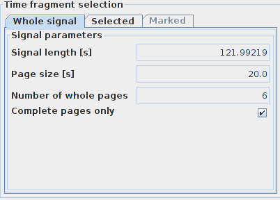
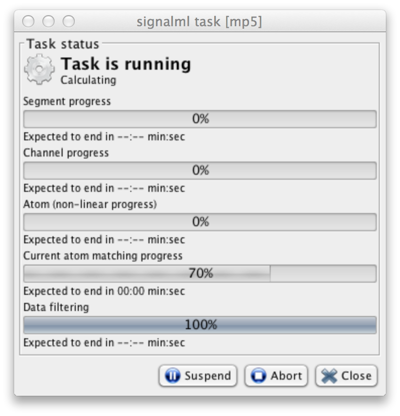

Mp5 software for matching pursuit (MP) decomposition of (biomedical multivariate) time series was developed at the University of Warsaw, Faculty of Physics. The algorithm is based upon the seminal paper by Mallat and Zhang (Mallat1993) with modifications described partly by Durka et al. (Durka2001) and Kuś et al. (Kuś2013). Mp5 is designed for batch processing input signals and writing results to disk files called—after (Mallat1993)—decomposition books. These books (*.b) contain parameters of the functions selected for representation of the analyzed signal.
Svarog offers an interactive interface for MP decomposition, allowing for:
Some of the topics presented below are covered in a screencast avaialble at http://braintech.pl/svarog/screencast.html. Caveat: default settings are optimized for speed rather than quality of the decomposition. This may be sufficient for the first try, but serious use requires some understanding of the procedure. Detailed description of the algorithm is given in (Kuś2013), http://www.biomedical-engineering-online.com/content/12/1/94.
Contents:
By default, Svarog looks for the file containing the mp5 binary
in PATH. If you installed the system from .deb packages (see http://deb.braintech.pl) it
should be already preconfigured. If that does not work, you should
provide the correct path in the "Preferences" dialog (Edit/Preferences),
tab Tools:
If you downloaded mp5 together with Svarog in one archive,
executables for different operating systems can be located under mp5 in subfolders linux, windows, and mac.
Using icons in the toolbar, mark in Svarog the part of the signal
that you want to decompose and select Tools/MP decomposition from the menu
Signal selection tab allows you to change selection or e.g. set
up decomposition of the whole signal page by page. Window above presents a selection of a single epoch; to decompose longer recording in smaller subsequent epochs one should mark the option "whole pages only" in the "Whole signal" tab as in the screenshot below:

Settings in other tabs correspond to the parameters of decomposition that will be written to the configuration file. Their meaning is explained in the next chapter.
After pressing Ok we get the window showing the progress of the
task

Execution time depends strongly on selected settings and length of the signal being decomposed. It can be quite long for multichannel decompositions. If a single channel was selected (as in the picture above) with default settings, and the sampling frequency was not extremely high (that is, there are no more than few thousand points in the selected epoch) decomposition should not take more than a minute on average PC.
You can move this window aside and continue working with Svarog in the meantime.
After the task completes, Get result button will
appear at the bottom of the window. Pressing it opens a dialog
where you can choose Open in the viewer and/or Save
to disk. The former option opens a new tab in Svarog and
diplays the timefrequency map of the signal's energy density,
computed from the decomposition:
Below the map the program displays the original signal, its
reconstruction from all the atoms from the (just computed)
decomposition, and the reconstruction computed from the selected
atoms. You can select atoms by clicking the crosses in their
centers. After clicking the magnifying glass in the top left, you
can zoom selected area of the map.
Parameters of the decomposition, entered in subsequent tabs of
the MP Decomposition configuration window, are
written to a configuration file, which is in turn passed by Svarog
to the mp5 binary. Mp5 config file consists of lines, which can be
divided into three groups:
Each line, which is not a comment, is treated as a setting for the program. Each setting consists of its name and assigned value. If any of the obligatory settings is missing, mp5 will return error. If the user does not set the additional settings, mp5 sets the default values. Lines with commands and comments can occur within the config file in any order.
The user can add his own comments to the configuration file by placing a # sign in front of the line. There are two type of comments:
# Moly set the numberOfChannels to 5 ## channels selected above motor cortex decomposed with
very small dictionary Although in general the results are written to the binary file, the comments are saved as text and can be viewed by standard text editor.
Signal (time series) for mp5 decomposition must be stored in a binary file as a 4-byte float numbers.
In case of multivariate
(multichannel) recordings the values should be multiplexed, that is:
s1ch1, s1ch2, …, s1chK, s2ch1, s2ch2, …, s2chK
where sXchY is the X-th sample at channel Y, K is the
number of channels
Full path to the input file.
The path to the output directory, where the file with results should be saved. The default is the same as location of the input file.
CREATE — create a new file for writing (saving results of decomposition).APPEND — append the results to an already
existing file or create a new file if there is no file to append
to Names of the output files are generated automatically; the name
of the file with the data is appended with: _smp.b in case of a single channel mp algorithm (SMP), or _mmp.b in case of one of the multichannel mp algorithms (MMP1, MMP2,
MMP3). The decomposition book includes also the original analyzed
epoch.
Number of channels in the input file. Positive integer, range: 1 - 65535.
In either of the algorithms—monochannel or multivariate—one does not have to use all the channels present in the data file. For example, using SMP we may decompose only few channels, and for MMP we may need to neglect non-EEG channels. This option lists the channels which we want to analyze. That is, to analyze all the channels from a 20-channel datafile config must contain:
numberOfChannels 20 selectedChannels 1-20
Channels are numbered starting from 1. Selection is written either as comma-separated list 1,2,3 or as ranges 1-3. Both can be combined in one line, e.g.:
selectedChannels 1, 3, 5, 7-11, 19type: positive integer,
When decomposing susequent epochs of a long signal, this option determines the length of the epoch measured as number of samples. Argument's value: positive integer. Range: 1 - 2147483647
Chooses which epochs (of the length defined by numberOfSamplesInEpoch)
will be analysed. First epoch in the file is number 1. Written as
comma-separated list with ranges as in selectedChannels.
OCTAVE_FIXED — functions distributed in a way to
optimally cover the ranges of parameters reasonable for a given
signal in a way that the distance between any two neighboring
functions does not exceed the threshold given by a user (Kuś2013) OCTAVE_STOCH — distribution as in OCTAVE_FIXED,
plus a stochastic element to remove the possible bias (Durka et al. 2001). The dictionary
with Gabors is created according to the first parameter
energyError command, but in the next step a fraction of randomly
selected functions are removed from dictionary. The number of
atoms left is controlled by the second value passed to the EnergyError parameter.This parameter regulates the density of the dictionary. That is, for the same energyError, and different sizes of the analyzed epoch, effective sizes of the dictionary will be larger for longer epochs, but accuracy of the decomposition should be equivalent (except for the border effects). Changing this parameter in the "Basic settings" tab automatically computes the amount of RAM necessary to store the dictionary that will be prepared for decomposition.
The energyError parameter has two values:
For example, the configuration of commands:
typeOfDictionary OCTAVE_FIXED
energyError 0.3 30.0results in generation of dictionary in which the maximal distance between nearest Gabors does not exceed value 0.3.
With another configuration:
typeOfDictionary OCTAVE_STOCH
energyError 0.3 40.0the distribution of the atoms in dictionary is performed in such way that the maximal distance between nearest Gabors does not exceed value 0.3. After generation of the dictionary, the number of Gabors will be reduced to 40% of their initial amount (determined by the threshold 0.3) by random selection.
type of the first parameter (energyError): float number
range of the first parameter: (0.0 1.0)
type of the second parameter (stochastic reduction): float number
range of the second parameter: (0.0 100.0>
If provided, this value will be used for the seed of the random generator used in creations a stochastic dictionary. Otherwise, the seed will be generated from the computer's clock.
For example:
randomSeed 23432The mp5 will used this number as a seed for random generator. The seed is the same for any stochastic reinitialization of the dictionary (see the next command: reinitDictionary).
Second example:
randomSeed autoThe mp5 will used the time form the computer's clock as a seed for therandom generator. The seed is different for each reinitialization of the dictionary.
Type: string "auto" or positive integer number
range in case of integer: 0 - 2147483647
When using the default stochastic (randomized) dictionary, the randomization is called reinitialization of the dictionary. It can be performed:
REINIT_AT_ALL — at each of the analyzed epochs,
works only for SMP. REINIT_IN_CHANNEL_DOMAIN — exactly the same
dictionary will be used to decompose all epochs within a
channel. Before the analysis of another channel, parameters will
be reinitialized, i.e. randomized again. This setting can be
applied only in the case of separate decomposition of channels
using SMP option. REINIT_IN_OFFSET_DOMAIN — dictionary will be
reinitialized before decomposing each subsequent epoch. NO_REINIT_AT_ALL — the same dictionary for
decompositions in all channels and all epochs. Maximum number of iterations equals the largest allowed numbers
of waveforms fitted to the analyzed epoch. This command together
with the next energyPercent control the number of
waveforms used for the approximation of the analyzed epoch, which
equals the number of algorithms iteration performed before the
stopping criterion is fulfilled. The iterations stop either after
reaching this number, or after explaining the percentage of
signal's energy set in the energyPercent parameter,
whatever comes first. That is, if we want to force the
decomposition to contain exactly maximalNumberOfIterations iterations, we should set energyPercent to 100. It
does not influence the accuracy of the parameters of the waveforms
fitted to the signal, in the sense that the 5 waveforms
fitted to the signal in 5 iterations run will be just as good as
the first 5 fitted in the 100 iterations run.
Time of computations is proportional to the number of algoritms iterations (except for the first, longer iteration), and obviously with more iterations we explain larger fraction of signal's energy; OTOH, too many iterations usually make no sense. Unfortunately, the meaning of "too many" depends on the properties of the signal and the aim of decomposition. For further considerations consult e.g. (Durka2007a) and (Durka2007b).
Type: positive integer
range: <1 65535>
Algorithm stops after explaining energyPercent %
of the energy of the analyzed epoch, that is, when the sum of
energies of functions fitted to the signals reaches energyPercent/100
of the signal's energy, unless maximalNumberOfIterations was reached first.
Type: positive float
range: (0 100.0)
There are significant differences between the 'classical' MP computed for the univariate time series, and the variety of possible versions of the multichannel MP. Choice of the appropriate flavor of multivariate algorithm is controlled by the MP variable, which can be assigned one of the following values. For equations and formulae see (Durka 2007a) and (Kuś2013)
SMP — monochannel MP (separate decomposition of
single channels) MMP1 — multichannel algorithm maximizing in each
iteration the sum of energies explained in all channels MMP2 — suboptimal, faster version of MMP1 maximizing in each iteration the sum of products of the waveform
with all the channels. In theory may degrade in the case when
opposite polarities are present across channels MMP3 — as MMP1, but allowing
different phases in each channel. All Gabor functions, for which the number of periods of the sine, given by this parameter, exceeds the half-width of the Gaussian, will be removed from the dictionary. It regulates removal of non-physical cases. For example, 1 Hz oscillation which lasts 100 milliseconds mathematically represents a well defined waveform. However, the very notion of frequency is dubious in such case. Also, the actul peak-to-peak amplitude of such function may significantly differ from the doubled amplitude of the Gaussian envelope. See (Durka2004)
Type: positive float
range: (0.0 3.402823466 E + 38>
Floating-point positive number. Decimal dot is obligatory, that
is "128.0" and not "128". This parameter
has no influence on the decomposition -- value is copied into the
decomposition book file and can be later used for scaling the
display of results.
Conversion rate from the actual values stored in the datafile to physical units, for EEG microvolts [µV], for MEG femtotesla [fT]. This parameter has no influence on the decomposition -- value is copied into the decomposition book file and can be later used for scaling the display of results.
Decimal dot is obligatory. For example,
pointsPerMicrovolt 20.0in EEG file says that the stored vaules must be multiplied by 20 to get microvolts.
Type: positive float
range: (0.0 3.402823466 E + 38>
The experimental feature of mp5 program, do not change it. The
default value is set to L2.
Generate dictionary including Dirac Function. The possible
argument of command is YES or NO string.
Generate dictionary including Gauss Function. The possible
argument of command is YES or NO string.
Generate dictionary including Harmonic function. The possible
argument of command is YES or NO string.
Generate dictionary including Gabor functions. The possible
argument of command is YES or NO string.
Plot text bar representing the progress of calculation. The
possible argument of command is YES or NO string.
# OBLIGATORY PARAMETERS nameOfDataFile test.dat nameOfOutputDirectory ./ writingMode CREATE samplingFrequency 128.0 numberOfChannels 24 selectedChannels 1-19 numberOfSamplesInEpoch 179 selectedEpochs 1-31 typeOfDictionary OCTAVE_FIXED energyError 0.3 50.0 randomSeed auto reinitDictionary NO_REINIT_AT_ALL maximalNumberOfIterations 100 energyPercent 95.0 MP SMP scaleToPeriodFactor 1.0 pointsPerMicrovolt 1.0 # ADDITIONAL PARAMETERS normType L2 diracInDictionary YES gaussInDictionary YES sinCosInDictionary YES gaborInDictionary YES progressBar ON
(Mallat1993) Stéphane Mallat and
Zhifeng Zhang
Matching pursuit with time-frequency dictionaries. IEEE Transactions on Signal
Processing 1993, 41:3397-3415
(Durka2007a) Piotr J. Durka
Matching
Pursuit and Unification in EEG analysis, Artech House 2007,
ISBN 978-1-58053-304-1
(Durka2007b) Piotr J. Durka
Matching
Pursuit, Scholarpedia, p. 20910, 2007.
(Kuś2013) Rafał Kuś, Piotr T.
Różański and Piotr J. Durka
Multivariate matching pursuit in optimal Gabor dictionaries:
theory and software for EEG/MEG via Svarog, Biomedical Engineering Online
2013, 12:94 doi:10.1186/1475-925X-14-94,
http://www.biomedical-engineering-online.com/content/12/1/94
(Durka et al. 2001) Piotr J. Durka, D.
Ircha and K. J. Blinowska
Stochastic time-frequency dictionaries for Matching Pursuit, IEEE Transactions on Signal
Processing, vol. 49, No. 3, pp. 507-510, March 2001.
(Durka2004) Adaptive time-frequency parametrization of epileptic EEG spikes P.J. Durka, Physical Review E, vol. 69, 051914 (2004)